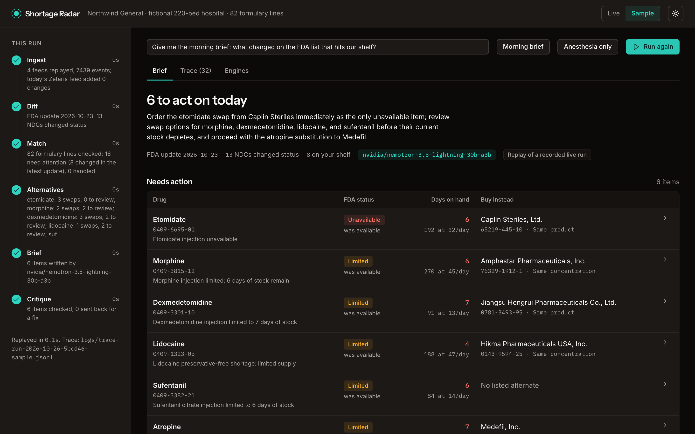
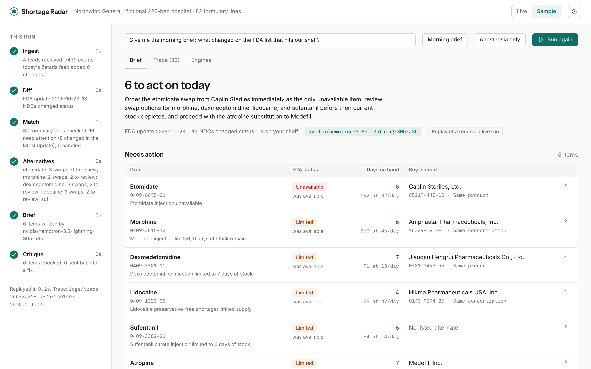
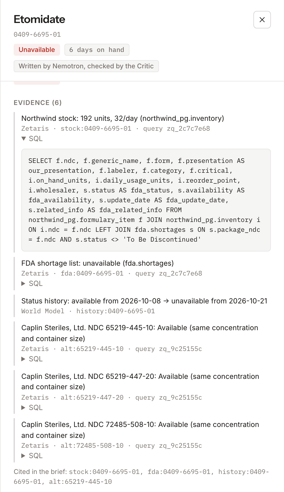

It doesn’t guess what will run short. It tells a hospital pharmacy buyer what to do about what just did.

The userThe buyer at a community hospital pharmacy. No supply-chain analytics team.
What they do todayCheck the FDA and ASHP pages, read wholesaler allocation emails, keep a spreadsheet. Often they learn a drug is short when an order fails.
What it costsHours of labor, and the risk of buying the wrong substitute: a different concentration is a medication error.

Matches stock to the FDA listOne SQL statement joins the hospital’s database with the live feed.
Explains every lineEach sentence cites the query, record or memory behind it.
Remembers decisionsHandled items stay quiet until the FDA status moves.
Read the FDA feed. Replay every saved snapshot.
What changed since the last update, with dated history.
Join stock and FDA status. Screen the rows. Set aside what is handled.
Choose what to cover. Find same-strength products from other makers.
Write one item at a time, citing evidence ids.
Reject any claim its evidence does not back.
The Writer gets a fresh prompt with the reasons, up to twice. Still wrong? That item becomes plain, deterministic text, labelled as such.
5-minute run budget, timeouts on every call, two model calls at a time. If Zetaris or Nightshift is unreachable, the run falls back to a recorded replay and says so.
TypeScript, Node 22, Next.js 15, React 19. One port serves the UI and POST /run.
Zetaris Lightning SQL, Postgres 16, saved FDA snapshots, recorded fixtures for offline replay.
Docker image built once, secrets only at run time, 75 tests, JSONL trace per run.
-- hospital Postgres (JDBC) joined with the FDA feed (REST) SELECT f.ndc, f.generic_name, i.on_hand_units, i.daily_usage_units, s.availability AS fda_availability FROM northwind_pg.formulary_item f JOIN northwind_pg.inventory i ON i.ndc = f.ndc LEFT JOIN fda.shortages s ON s.package_ndc = f.ndc AND s.status <> 'To Be Discontinued'
FDA feed as a REST tableCREATE LIGHTNING REST TABLE, cached, flattened. 1,611 rows, equal to openFDA’s own total.
Hospital DB as a JDBC sourceCREATE DATASOURCE … jdbcurl. The syntax came from the parser’s error messages.
Read-only by constructionStacked statements and any write are refused before they reach Zetaris.
Replays every FDA snapshot. Powers “what changed” and the dated status history.
Stores what the buyer decided. Handled items leave the brief and return if the FDA status moves.
Screens FDA notes and database rows before any model reads them. Withholds only the poisoned field.
Official runners from Meterless, unmodified, checksummed in the repo. Honest caveat: on 6 attacks written after our rules, Scout caught 0. We patched 5. Polish still gets through.
trace-example-1.jsonl (a real run) + 1.9s Zetaris fda-feed 1,611 rows + 2.6s Guard scout:screen 82 rows screened + 2.6s Planner plan:start thinking on +41.9s Planner plan nemotron-3.5-lightning-30b-a3b +43.1s Zetaris alternates 464 rows +45.9s Writer write nemotron-3.5-lightning-30b-a3b +45.9s Critic critique every claim checks out +48.3s Writer write nemotron-3.5-lightning-30b-a3b +48.3s Critic critique every claim checks out … +58.9s done 6 items, success
The Planner keeps thinking on: choosing what matters is the judgement call, and it takes 39 s of a 59 s run. The Writer turns it off, 2 to 6 s per item, because the Critic checks every claim anyway.
First live request failed with an empty reply: an 80-token cap had been spent on thinking.

The Critic rejects a draft when:
Caught in a live run: the Writer cited another drug’s alternate (alt:76329-1912-1) on sufentanil. The Critic sent it back; the retry was clean.
No Zetaris: no join of private stock and public feed. No World Model: no “what changed”. No H-MEM: handled items re-alert daily. No Scout: planted text reaches the model. No Nemotron: no plan, no write-ups.
Do recalls predict shortages? Over 142 shortages, they were less common before one (0.7–0.9× baseline). So the agent never forecasts. It reports exposure, runway and swaps.
The obvious query offered 10 mg/mL for 20 mg/mL and a premixed drip for a vial. Strengths are parsed to per-mL; combinations and preservative mismatches go to pharmacist review.
A second model agreeing with the first proves little. A function that recomputes the NDC, the citation and the day count cannot be talked into agreeing.
# Sample mode needs no Zetaris, Nightshift or network docker build -t oah-submission . && docker run --rm -p 8000:8000 oah-submission # then open http://localhost:8000 and press Run sweep